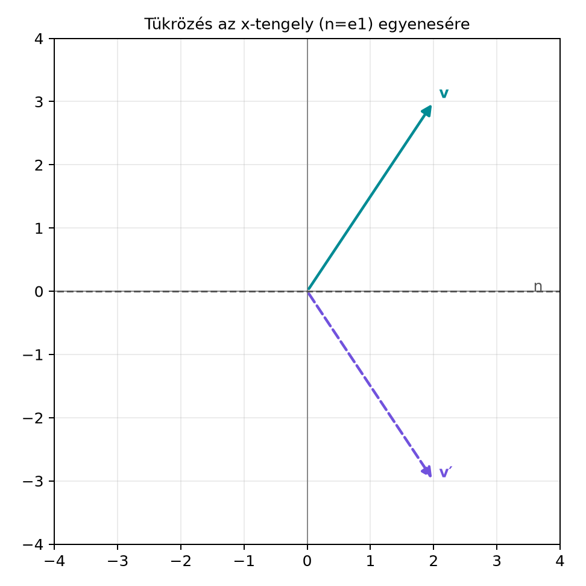

Tegyük fel, hogy egy síkbeli vektort szeretnénk tükrözni egy origón
átmenő egyenesre. A hagyományos koordinátageometriában ez több lépést
igényel: föl kell írni az egyenes normálvektorát vagy irányvektorát,
kiszámítani a vektor egyenesre eső vetületét, majd a merőleges
komponenst levonni. A geometriai algebrában ugyanez a művelet egyetlen,
nagyon egyszerű mintájú szorzattá tömörül: ha az egyenes irányvektora az
egységvektor
,
akkor a tükrözött vektor
Ez az úgynevezett szendvicsszorzat (sandwich
product), mert a
vektor két oldaláról ugyanaz az
veszi körül. Ez a minta a geometriai algebra egyik legfontosabb
építőköve: ugyanígy fogunk később forgatni is, térben tükrözni, sőt
Lorentz-transzformációt is végezni.
5.3.2 Szemléletes kép
Vegyük az
-tengelyt,
tehát
,
és tükrözzük rá a
vektort. Az
-tengellyel
párhuzamos rész
,
az arra merőleges rész
.
A tükrözés a párhuzamos részt változatlanul hagyja, a merőleges rész
előjelét pedig megfordítja, ezért a kép
Az alábbi ábra ugyanezt mutatja.

Tükrözés az x-tengely (n=e1) egyenesére -
n=(1,0), v=(2,3) tükrözése v’=(2,-3).
A diagramon az
-tengely
az
iránya, a kék nyíl a
vektor, a tükrözött vektor pedig a
pontba mutat. A tükrözés során a vízszintes komponens
marad, a függőleges komponens
-ból
lesz.
Érdemes a tükrözést a geometriai szorzatra bontva is fölírni. Az
alapösszefüggés szerint
Ezt jobbról
-nel
szorozva:
Az előző levezetésből tudjuk, hogy a második tag éppen a merőleges
rész negatívja:
Így a fenti kifejezés tényleg
.
Ez az alak később azért lesz hasznos, mert a vektor-bivektor szorzás
szabályait használja. A jelen alfejezetben azonban elegendő a
párhuzamos–merőleges felbontás.
5.3.5 Ha az egyenes normálvektora
A fenti levezetésben
az egyenes irányvektora volt. Ha viszont
az egyenes normálvektora, tehát az egyenes iránya
merőleges
-re,
akkor a tükrözés előjelet vált. Legyen az egyenes irányvektora
,
amelyre
.
Az egyenesre való tükrözés a
-nek
az
-mel
párhuzamos részét tartja meg, és az
irányú részét fordítja meg. Ez a korábbi eset negatívja, tehát
Ezt érdemes konkrét példán ellenőrizni. Legyen
az
-tengely
normálvektora, és tükrözzük a
vektort az
-tengelyre.
A várt kép
.
A képlet szerint
ami valóban az
-tengelyre
való tükrözés.
5.3.6 Nem egység hosszúságú
Ha
nem egységvektor, akkor az
szorzat nem tiszta tükrözés, hanem a tükrözés mellett egy nyújtást is
tartalmaz. Legyen
,
ahol
egységvektor. Ekkor
A belső
tükrözés, de az egész szorzatot még
-tel
is meg kell szorozni. Ha valóban csak tükröznünk kell, a hossz hatását
ki kell ejtenünk. Mivel egy vektor inverze
,
a helyes képlet nem egység hosszúságú
esetén:
Egység
esetén
,
ezért ez a képlet visszaadja a korábbi
alakot.
5.3.7 Kidolgozott példa
Számítsuk ki kézzel a bevezető példát minden közbülső lépéssel.
Legyen
és
.
A szendvicsszorzat:
A disztributivitás miatt:
Az első tag:
A második tagban
,
és mivel
.
Számoljuk ezt ki az asszociativitás és az ortonormált bázis
antikommutativitása segítségével:
Tudjuk, hogy
,
ezért
Tehát a második tag:
A teljes szorzat:
Ez valóban a
vektor tükörképe az
-tengelyre.
A párhuzamos rész
változatlan maradt, a merőleges rész
előjelet váltott.
Most vegyünk egy egységnyi hosszúságú
irányvektort, és tükrözzük rá az
vektort. A geometriai kép szerint a
-os
egyenesre tükrözés az
-et
-be
viszi. Számoljuk ezt is ki röviden:
Először a középső szorzatot bontjuk ki:
Ezt szorozzuk jobbról
-vel:
A bivektoros tagok:
és
Így
Végül az
-es
szorzóval:
A
-os
egyenesre tükrözés tehát valóban az
-et
-be
viszi.
5.3.8 Python-ellenőrzés
A mini könyvtár ga2.py moduljával ellenőrizhetjük a
képletet. Definiáljuk a tükrözés függvényt, és nézzünk meg két
esetet.
from ga2 import MV2, vec2def reflect_line(v, n):"""Tükrözi a v vektort az n egységvektor egyenesére."""return n * v * n# 1. példa: tükrözés az x-tengelyren = vec2(1, 0)v = vec2(2, 3)print("n =", n)print("v =", v)print("n v n =", reflect_line(v, n))
Várt kimenet:
n = MV2(s=0.0, e1=1.0, e2=0.0, e12=0.0)
v = MV2(s=0.0, e1=2.0, e2=3.0, e12=0.0)
n v n = MV2(s=0.0, e1=2.0, e2=-3.0, e12=0.0)
Második példaként tükrözzünk az
-tengelyre.
Legyen
a tengely irányvektora,
.
A várt kép
.
n = vec2(0, 1)v = vec2(3, -2)print("n v n =", reflect_line(v, n))
Várt kimenet:
n v n = MV2(s=0.0, e1=-3.0, e2=-2.0, e12=0.0)
Végül ellenőrizzük a normálvektoros alakot is. Legyen az egyenes
normálvektora
,
tehát az egyenes az
-tengely.
A képlet
.
n = vec2(1, 0)v = vec2(2, 3)print("-n v n =", -reflect_line(v, n))
Várt kimenet:
-n v n = MV2(s=0.0, e1=-2.0, e2=3.0, e12=0.0)
Ez tényleg az
-tengelyre
való tükrözés.
5.3.9 Tipikus hibák és
félreértések
Sorrendcsere a szendvicsszorzatban. A geometriai
szorzat nem kommutatív, ezért a
kifejezésből nem szabad
-t
vagy
-et
csinálni. Például
,
míg
.
A helyes eljárás mindig az asszociatív szorzás:
vagy
,
de a tényezők sorrendjét nem változtathatjuk meg.
Nem egység hosszúságú
-nél
elfelejteni az inverzet. Ha
hossza nem
,
az
szorzat a tükrözés mellett
-es
nyújtást is ad. Ilyenkor a helyes képlet
.
Például
esetén
,
ami nem tükrözés, hanem
-szeres
nyújtás. Ezzel szemben
,
ami már tiszta tükrözés.
Az irányvektoros és a normálvektoros alak
összekeverése. Az
képlet akkor tükröz az adott egyenesre, ha
az egyenes irányvektora. Ha
az egyenes normálvektora, akkor a képlet
.
A két alak között egy előjel a különbség, ezért érdemes mindig egy
konkrét számpéldán ellenőrizni, melyik esetről van szó.
A merőleges rész előjelének hibás levezetése.
Amikor azt írjuk, hogy
,
könnyű elveszteni a negatív előjelet. A helyes lépés: mivel
,
a szorzat tiszta bivektor, és két merőleges vektor antikommutál. Tehát
,
és ebből
.
5.3.10 Feladatok
(a) Fogalmi kérdés. Miért marad a párhuzamos rész
változatlan a tükrözésnél, és miért vált előjelet a merőleges rész?
Magyarázd el a geometriai képet és a szendvicsszorzat szerkezetét!
(b) Kézi számolás. Legyen
és
.
Számítsd ki az
szorzatot lépésenként, és ellenőrizd, hogy a kapott vektor valóban az
-tengelyre
való tükrözés.
(c) Levezetési feladat. Mutasd meg, hogy ha
nem egységvektor, akkor az
képlet tiszta tükrözést ad, vagyis nem tartalmaz nyújtást. Útmutatás:
írd fel
alakban, ahol
egységvektor, és használd a
tükrözési tulajdonságát.
(d) Python-feladat. Írd meg a
reflect_line(v, n) függvényt a ga2 modul
MV2 osztályával, és ellenőrizd a
-os
egyenesre való tükrözést. Használj
irányvektort, de ne felejtsd el, hogy ez nem egységvektor. A helyes
képlet ekkor
.
Ellenőrizd, hogy az
vektor képe
lesz.
(e) Előkészítő feladat a továbbvitt eredményhez.
Tükrözzük a
vektort előbb az
,
majd az
egységvektor egyenesére. Írd fel a két tükrözést egymás után, és mutasd
meg, hogy az eredmény
Figyeld meg, hogy ez ismét szendvicsszerkezetű! Ezt az alakot
használjuk majd a Két tükrözés egy forgatás
alfejezetben.
5.3.11 Megoldások
(a) A tükrözés tengelye mentén a vektor
komponensének nem szabad megváltoznia, mert a tengely pontjai helyben
maradnak. A tengelyre merőleges komponens pedig a tengely másik oldalára
kerül, ezért az iránya az ellenkezőjére fordul. A szendvicsszorzatban
a tengely irányvektora: a
rész azért marad változatlan, mert
.
A merőleges rész pedig azért vált előjelet, mert
,
így
.
(b)
Disztributívan:
A második tag:
,
ezért
.
Az első taghoz
,
tehát
Összeadva:
Ez a
vektor
-tengelyre
való tükrözése, mert az
-komponens
előjelet váltott, az
-komponens
maradt.
(c) Írjuk fel az
vektort
alakban. Ekkor
Ezért
Mivel
egységvektor, ez tiszta tükrözés, nyújtás nélkül.
(d) A Python-megoldás:
from ga2 import MV2, vec2def reflect_line(v, n):"""Tükrözi a v vektort az n egyenesére (n nem feltétlenül egység)."""return n * v * n.inverse()n = vec2(1, 1) # 45 fokos irány, hossza sqrt(2), nem egységv = vec2(1, 0)print("n v n^-1 =", reflect_line(v, n))
Várt kimenet:
n v n^-1 = MV2(s=0.0, e1=0.0, e2=1.0, e12=0.0)
A numerikus értékek az MV2 osztályban egészek, mert az inverz
kiszámítása pontosan végzi el a
-es
skálázást.
(e) Először az
-re
tükrözünk:
.
Utána az
-re:
A geometriai szorzat asszociatív, ezért a zárójeleket
átrendezhetjük:
Mivel
és
egységvektorok, a
szorzat egy verzor, és az eredmény ismét
szendvicsszerkezetű:
,
ahol a
.
Ez a szerkezet vezet majd a rotorokhoz.
5.3.12 Rövid összefoglaló
Ha
egységvektor, akkor a
vektor tükrözése az
irányú, origón átmenő egyenesre a szendvicsszorzat:
A levezetés a párhuzamos és merőleges felbontáson alapul:
,
ahol
.
A párhuzamos részre
,
a merőleges részre a
antikommutáció miatt
.
Így a szendvicsszorzat
,
ami éppen a tükrözés. Ha az egyenes normálvektora
,
akkor a képlet
.
Nem egység hosszúságú
esetén a helyes tükrözés
.
Ugyanez a szendvicsszorzat-minta jelenik meg a Két
tükrözés egy forgatás, a Tükrözés síkra és
egyenesre a térben és a Két tükrözés = forgatás:
a rotor és a szendvicsszorzat alfejezetekben.
5.3.13 Források és ellenőrzési
hiányok
Ez az alfejezet a geometriai algebra standard eredményeit használja.
A fejezet elején megadott források közül a Macdonald-féle jegyzet
hasonló felépítésben tárgyalja a tükrözést, de az oldalszámokat és a
pontos szakaszbeosztást nem ellenőriztem. Amini könyvtár
ga2 moduljának inverse() metódusa a könyv
korábbi részében bevezetett
képletre épül.